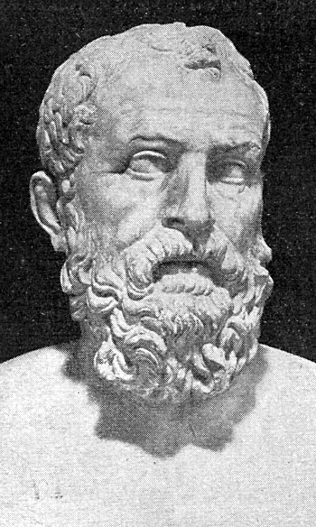

„Die Macht geht vom Volke aus“. Demokratie ist eine Herrschaftsform, bei der politische Macht durch das Volk ausgeübt wird.
Der Begriff setzt sich aus den griechischen Wörtern „Demos“ für „Staatsvolk“ und „Kratos“ für „Herrschaft“ zusammen, was
wörtlich übersetzt „Herrschaft des Volkes“ lautet. Doch leider hilft dieser Ausdruck wenig weiter, zumal sich mittlerweile
Diktaturen als „wahre Demokratien“ bezeichnen. Auch bei der Differenzierung von anderen Regierungssystemen, sorgt sie führ
großen Aufruhr. Heutzutage gibt es konstitutionelle Monarchien, die das Königtum beibehalten, deren Verfassung jedoch demokratische
Grundrechte garantiert und die Macht der Monarchen wesentlich einschränkt. So wurden neue Ansätze geknüpft, die Demokratie
in Abgrenzung von autoritären und totalitären Regimen, festzulegen. Der griechische Staatsmann Perikles (500-429 v. Chr.)
definierte Demokratie im Athen seiner Zeit wie folgt: „Die Verfassung die wir haben […] heißt Demokratie, weil der Staat
nicht auf wenige Bürger, sondern auf die Mehrheit ausgerichtet ist“. So klar Demokratie als eine Mehrheitsherrschaft scheinen
mag, doch der Eindruck der Eindeutigkeit täuscht. Zwar mag es noch relativ umstritten sein, ob Demokratie eine Verfassungsform
ist, bei der es auf die Mehrheit ankommt, allerdings führt schon die Frage, wie die Mehrheit die Herrschaft ausüben soll
zu sehr unterschiedlichen Auffassungen und Formen der Demokratie. Ob die Mehrheit ihre Herrschaft direkt, durch Versammlungen
und Abstimmungen ausüben soll oder diese Herrschaft indirekt, durch Vertretern einer Interessensgruppe erfolgt. Fraglich
ist außerdem ob die Herrschaft des Volkes mittelbar oder unmittelbar ausgeübt wird. Genauso offen ist die Frage, ob das komplette
Volk oder nur eine selegierte Mehrheit des Volkes herrschen soll. Nicht von ungefähr stellte deshalb schon der Philosoph
Aristoteles im 4. Jahrhundert v.Chr fest: „Jetzt aber meinen einige, es gäbe bloß eine Demokratie […], doch das ist einfach
nicht wahr“. Abgesehen davon breitete sich die Idee der Demokratie über die ganze Welt hinaus, obschon sie auch nicht überall
und nicht jeweils gleich stark etabliert werden konnte. Die erste Demokratisierungswelle begann in den 1820er-Jahren und
dauerte bis etwa 1926, währenddessen sich 29 Demokratien bildeten. Der Faschismus in Italien initiierte eine rückläufige
Entwicklung, die sich jedenfalls nach dem Zweiten Weltkrieg wieder stabilisierte und in den 60er Jahren letztendlich 36 Demokratien
hervorbrachte. Des Weiteren trugen die friedlichen Revolutionen von 1989/90 in Mittel- und Osteuropa zur Entstehung 30 weiterer
Demokratien bei. Schlussendlich ließ das als „Arabischer Frühling“ bezeichnete Rebellieren von breiter Bevölkerungskreise
eine vierte Welle demokratischer Umstrukturierung zu. Die entsprechenden Ansätze entwickelten sich jedoch unterschiedlich.
Vielerorts wurden Demokratiesierungsprozesse gestoppt oder durch neune autoritäre Regierungsformen ersetzt.
Falls ein Staat als „moderne Demokratie“ klassifiziert werden möchte, muss dieser Folgende Grundanforderungen erfüllen:
Der Träger der Staats- und verfassungsgebenen Gewalt ist das Volk
Das Volk trifft in kollektiven Prozeduren wie politischen Wahlen oder Abstimmungen die politischen Entscheidungen innerhalb eines Staates
Die Regierung eines demokratischen Staates wechselt ohne Revolution durch in bestimmten Zyklen wiederkehrende und verbindlich festgesetzte Verfahren
Die politischen Entscheidungen werden innerhalb eines bestimmten Territoriums (Staatsgebiets), in dem das Volk ansässig ist,
angewendet und umgesetzt. In der Regel ist dies heutzutage der Nationalstaat und das Staatsgebiet des Volkes korrespondiert
mit der Reichweite des demokratischen Systems. Bei Kolonien eines demokratischen Staates fallen Demos und Territorium auseinander
und sie gelten nicht als demokratisch, wenn sie von ihrem Mutterland regiert werden.
Ist das Territorium ein Nationalstaat, so muss dieser ein souveräner Staat sein
Demokratie in der Antike
Lage in Griechenland während des 7./8.Jahrhunderts
Demokratie hat seinen Ursprung im sechsten Jahrhundert v. Chr. In Athen. Die heutige Hauptstadt Griechenlands war damals
die größte Polis des antiken Griechenlands mit großem kulturellem und politischen Einfluss in der damaligen Welt. In der
historischen Forschung wird diese erste Form der Demokratie heute als „attische Demokratie“ bezeichnet, benannt nach dem
attisch-delischen Seebund, einem Bündnis zwischen Athen und anderen Polis in und um die Region Attika. Die Geschichte Griechenland
im 8. Und 7. Jahrhundert v. Chr. Ist geprägt von einer Vorherrschaft der wohlhabenden Bürger über die ärmere Bevölkerung.
Im 7. Jahrhundert. beseitigte der Adel die Demokratie und schufen damit eine Aristokratie. Während die Adeligen fast das
gesamte Ackerland besaßen, verarmten immer mehr eigentlich freie Bauern und wurden dadurch zu Schuldknechtschaft gezwungen.
Nachdem mit der Münzprägung eine einfache Form des Kapitalismus nach Athen kam, hatten die Wohlhabendsten nun immer mehr
Möglichkeiten ihren Reichtum auszuweiten, was sie unter anderem auch durch Handel mit anderen Gebieten taten. Sie ließen
günstiges Getreide importieren, mit denen die einheimischen Bauern nicht konkurrieren konnten, sodass ihnen keine Andere
Wahl blieb als sich Geld von den Aristokraten zu leihen. Dennoch hatten sie keinerlei Chance ihre Schulden abzubauen, zumal
ihnen das Prinzip der Verzinsung den Schuldenabbau erheblich erschwerte. Somit wurden ehemals freie Athener durch die Schuldknechtschaft
praktisch zu Sklaven.
Reformen Solons

Um 650 v. Chr. Versuchte der Archon Drakon die Willkür im Staat durch geschriebene Gesetze zu bannen. Die Strafen für die
Vergehen waren jedoch so hoch, es wäre als „in Blut geschrieben“ angesehen. Folglich wurde die Not nur noch größer und Erbitterung
stieg. Aufstände brachen aus und ein Bürgerkrieg drohte. In dieser krisenhaften Situation, die von Unruhen seitens der armen
Bevölkerung geprägt war, wurde er zu einem der neun Archonten berufen, dem damals bedeutendsten Amt. Er sollte als eine Art
Friedensrichter dafür sorgen, dass wieder Ruhe und Ordnung einkehrt. Als Amtsvorsteher hatte er besonders viel Einfluss.
Mit seiner Stellung hätte er den Anspruch auf eine autoritäre Alleinherrschaft gehabt, verzichtete jedoch auf diese Privilegien
und entschloss sich stattdessen, sich der Reformierung der Staatsordnung zu widmen. Diese Entscheidung hielten Zeitgenossen
für unverständlich und sie gilt auch bis zum jetzigem Zeitpunkt unter Historikern als außergewöhnlich. Solon schuf ein erstes
Grundgesetz, in denen die Rechte und Pflichten der Bürger festgelegt waren. Diese Gesetze lies er erstmal aufschreiben, damit
jeder Bürger sich darüber informieren kann. Die Reformen des Solons gaben verschuldeten Bauern ihr Land zurück. So gilt er
als Begründer der Demokratie in die Geschichte eingegangen. Des Weiteren teilte er die Gesellschaft in vier Bürgerklassen
ein: 1. Großgrundbesitzer, 2. Hippoi, 3. Zeugiten, 4. Theten. Je nachdem, welcher Klasse eine Person angehörte, definierten
sich ihre politischen Rechte. Mitglieder der ersten drei Klassen durften für alle politischen Ämter kandidieren. Die ärmste
Klasse freier Bürger durfte sich lediglich an der Wahl des Volksrates beteiligen. Der Volksrat bestand aus 400 Mitgliedern
aus den vier Phylen, in die Athen damals geographisch unterteilt war. Die Bevölkerung einer jeden Phyle wählte 100 Vertreter
in diesen Rat, der nach seiner Mitgliederanzahl benannt wurde. In der Volksversammlung, die etwa 40-mal pro Jahr stattfand,
konnten alle männlichen Bürger ihre Angelegenheiten selbst in die Hand nehmen. Es wurden beispielsweise Gesetze beschlossen
oder Beamte gewählt. Der Rat der 400 bereitete die Beschlüsse der Volksversammlung vor. Die laufenden Staats- bzw. Regierungsgeschäfte
lagen in den Händen der 9 Archonten. Das wichtigste Organ war jedoch der Adelsrat, der sogenannte Areopag. Seine Mitglieder
bestanden aus ehemaligen Archonten, die ebenfalls sehr großen Einfluss hatten und zudem eine Sonderstellung genossen. Zwar
mag er der Begründer der Demokratie sein, doch die Vorherrschaft des Adels tastete er nicht an, sondern versah das Staatswesen
lediglich mit demokratischen Zügen. Die Unzufriedenheit hielt an – die Wohlhabenden glaubten zu viel verloren, die Armen
zu wenig gewonnen zu haben. So riss Peisistratos die Macht an sich und regierte im laufe von vielen Jahren als Tyrann. Auf
Staatskosten ließ er eine Flotte und teure Gebäude erbauen, gründete Kolonien und sorgte für einen wirtschaftlichen Aufschwung
und ein großes Arbeitsangebot, weswegen man ihn für eine so lange Zeit regieren ließ.
8./7. Jahrhundert v. Chr.
Monarchie wird durch Aristokratie des Adels in Athen ausgetauscht
6. Jahrhundert v. Chr.
Gesellschaftliche Krise in Athen sorgt für Aufstände
650 v. Chr.
Drakos versucht Unruhen im Staat durch Gesetze zu bändigen, dessen Strafen sehr grausam waren. Er scheitert
638 – 558 v. Chr.
Umstrukturierung des Staates Athen durch Reformen von Solon
594 v. Chr.
Solon wurde zum Vorsitzendem der neun Archonten gewählt